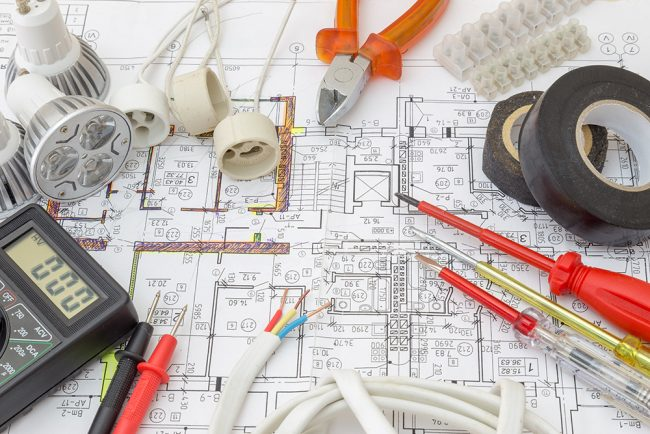
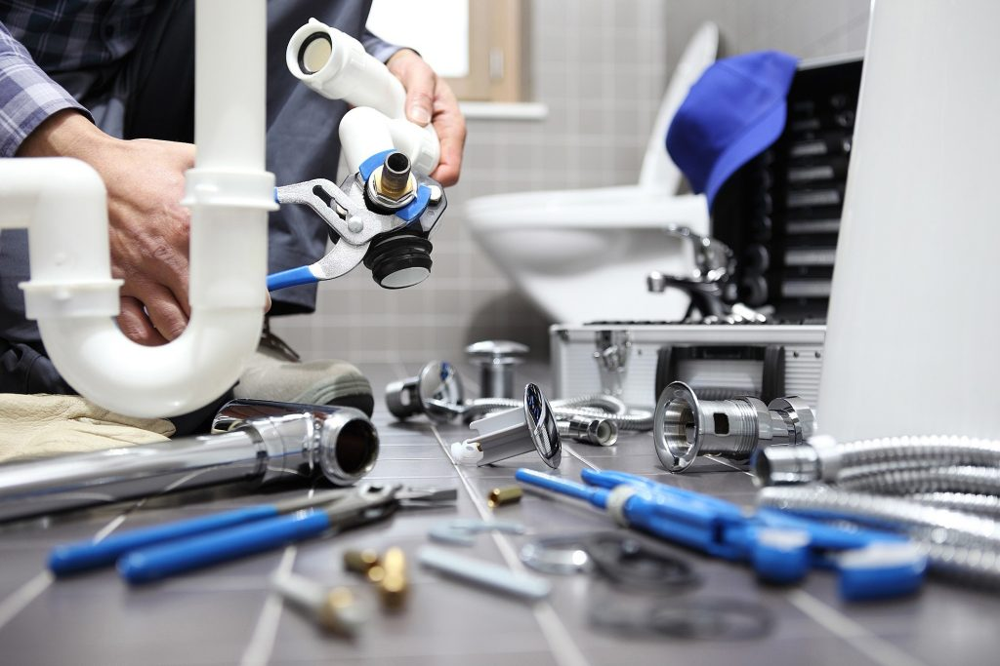
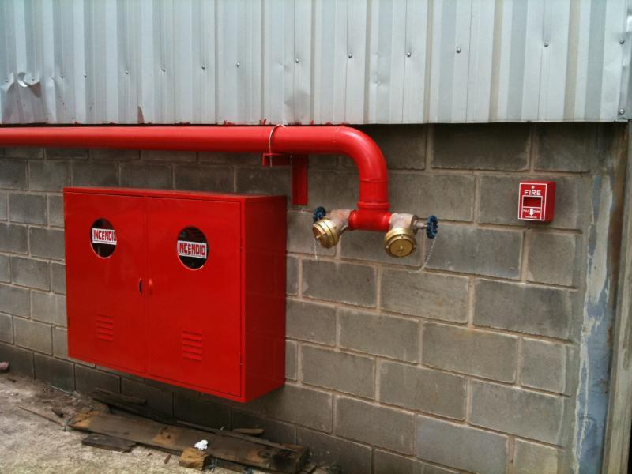
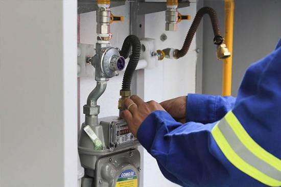
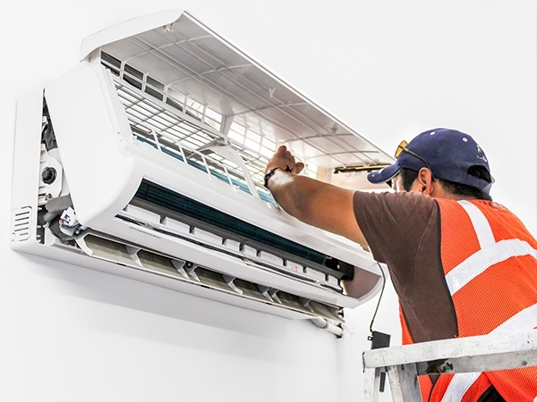

SERVIÇOS

Instalações elétricas residenciais, prediais e industriais.

Instalações hidráulicas de água fria, água quente, plúvial e esgoto.

Instalações de hidrantes, alarme de incêncio, Iluminação de emergencia, extintores e Para-raios.

Instalação de tubulações de gás residencial, predial e industrial.

Instalação e manutenção de Climatizadores.